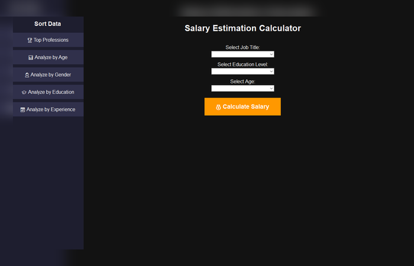
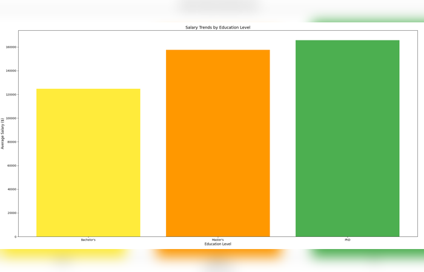
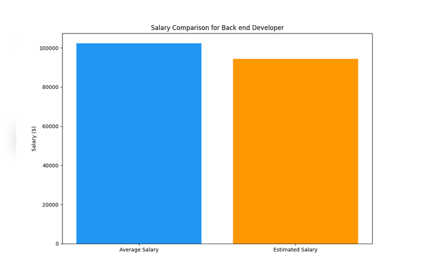

About Me
I'm Chrystyan Pulido, a 22-year-old from Los Angeles with a passion for data and software. I'm currently pursuing a B.S. in Computer Science at Oregon State
University, set to graduate in Fall 2026. Here, you'll find projects that showcase my journey and growth!
When I'm not at my computer I like to stay fit, read history, and spend time with family.
Projects
Salary Calculator



The Salary Calculator is a data visualization and analysis tool that allows users to analyze salary trends by job title, education level, experience, age, and gender. The tool can sort data into categories, generate graphs, and function as a salary estimator by predicting salaries based on trends from the data.
The program reads a CSV file and uses salary data provided by Kaggle.
Contact